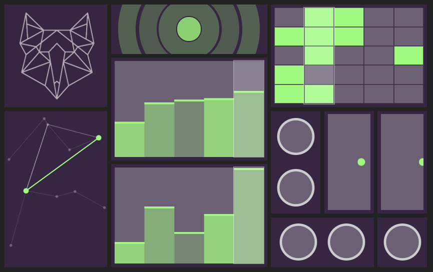
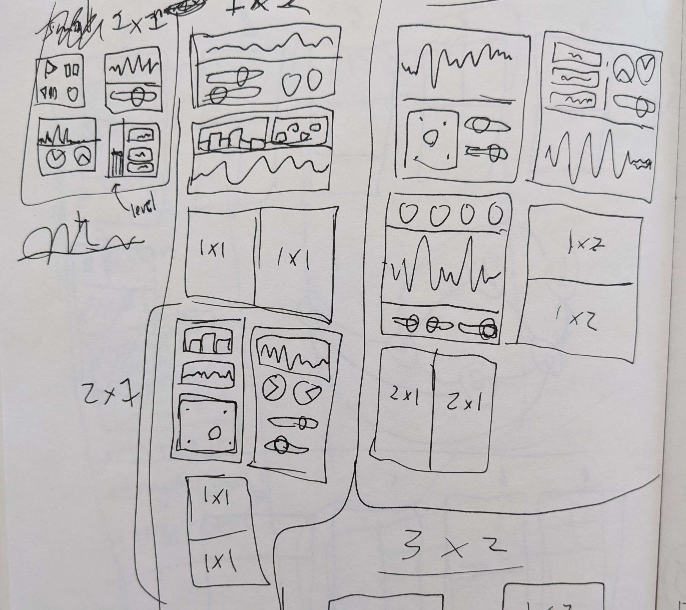
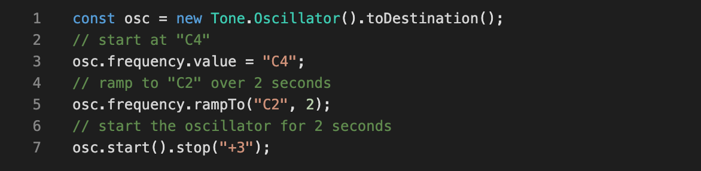

Commission / Audio systems
Parallels 03
An interactive audio experience for Vancouver New Music, shaped by musicians, writers, and visual artists.

Project overview
Vancouver New Music commissioned me to build the web experience for Parallels 03. The remote collaboration set out to create an interactive piece and an album.
Raven Chacon (now Pulitzer prize-winning composer) and John Dieterich (of the fantastic group Deerhoof, among many other projects) led the collaboration from a musical perspective. Also involved were various instrumentalists, writers, and visual artists. Read more about the project here.
Tools Typescript, Tone JS, Nexus UI Elements, Amazon Web Services
Asynchronous Collaboration

- I led brainstorming and whiteboarding sessions to define the experience with the artists. Between sessions, we iterated asynchronously on sketches, recordings, writing, and images.
- The group wanted it to be something that would encourage experimentation, and be somewhat chaotic and inscrutable, yet mesmerizing.
Interaction Design

- My background in art and music helped me translate the collaborators’ creative direction into interaction and engineering decisions.
- Designing this experience was interesting because no one had a set idea of the end product beforehand. Instead, the group had a lot of ideas for how the experience would make someone feel, what the sensations would be, and I worked backwards from that to the final idea.
- I came up with the idea of a big, opaque "wall" of controls - each control actually affecting some parameter of the audio - for example, pitch, or filter frequency. The controls would pop in and out, changing over time.
- The geometric animal shapes were an asset we knew we wanted to be central. Each one represents a different "room" of sound - with different audio clips, effects, and different types of controls available. The user gets an impression that they're blindly navigating through a labyrinth of strange rooms.
Web Audio

- I used Tone.js to connect playback, synthesis, and effects in a graph. Each node could transform the audio as it passed through.
- As a UI control first renders, it is assigned to a random parameter of an effect that's in the current space, which is handled within a React Hook by a custom pub/sub system that I wrote.
Amazon Web Services

- I deployed the static build to S3, used CloudFront for distribution, and configured DNS through Route 53.
- I configured roles and permissions for the deployment, granting each service the access it needed.